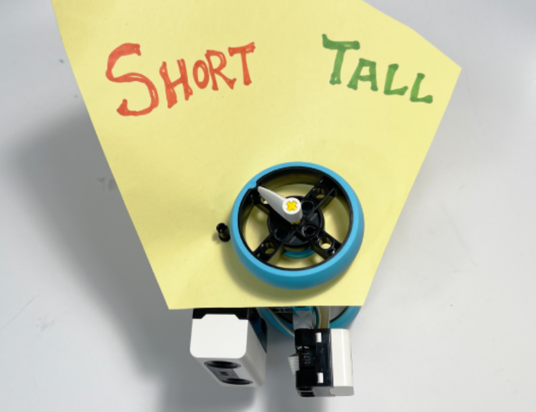

For this project, I built a supervised classification device that uses machine learning to tell “high” and “low” heights apart. In training mode, I held the distance sensor at different heights and recorded each distance reading with a matching motor position, so the device learned which readings mean “short” and which mean “tall.” In prediction mode, the device takes a new distance reading and uses a K-Nearest Neighbor classifier to find the three closest stored readings. It then moves the motor’s pointer to the answer most of them agree on. I chose k = 3 because it’s small enough to work with only a few training points, and a vote among three neighbors still means one bad data point can’t throw off the prediction.